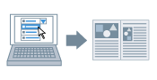

Можно применить зарегистрированные настройки печати, выбрав соответствующий элемент из списка [Профиль].

1.
Откройте вкладку [Основные настройки], [Макет страницы], [Окончательная обработка], [Источник бумаги] или [Качество].
2.
Выберите соответствующий конкретным требованиям профиль из списка [Профиль].
Эта функция удобна для регистрации часто используемых настроек (см.
Добавление профилей).
Необходимые условия
[Разрешить выбор профиля] во вкладке [Профиль]
Справки
[Печать плаката] невозможно выбрать, если установлена настройка [Двухсторонняя печать]. Более подробно о переключении между двухсторонней и односторонней печатью см. в разделе
Односторонняя и двухсторонняя печать.